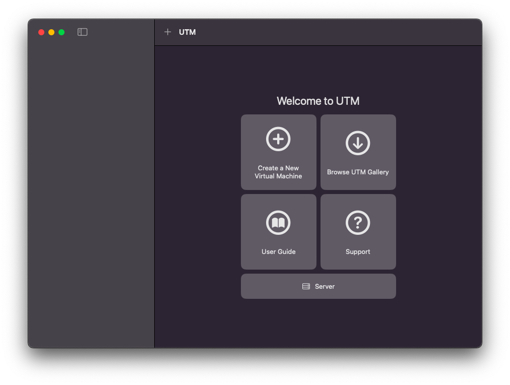
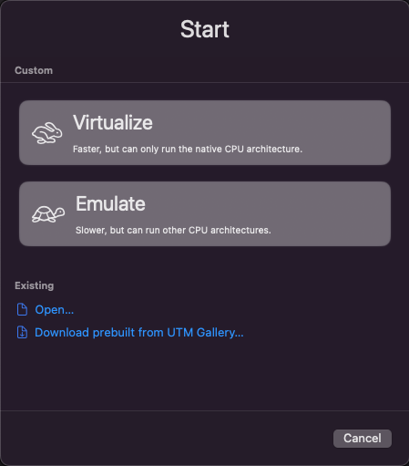
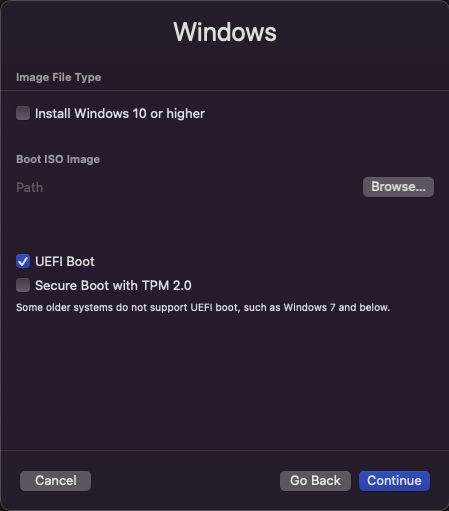
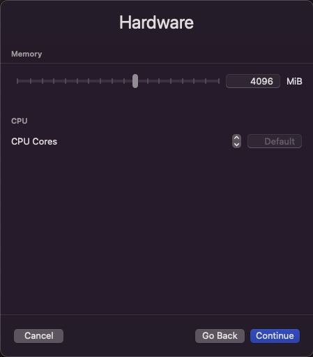
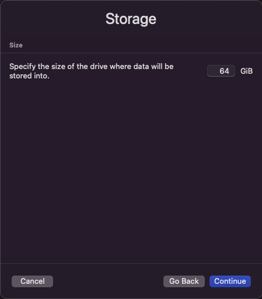

UTM is a free and open-source virtualization software that allows you to run virtual machines on iOS and macOS devices.
Avaible platforms:


Mount the DMG of UTM and drag it into the Applications folder
Open the UTM app, click on Create New Virtual Machine
Open the UTM app, click on Create New Virtual Machine
For the JIT version, you have to sideload it
You can go to the UTM VM Gallery and download a preconfigured VM
If you want to manually make it, see here how to do
First click on Create a New Virtual Machine
You can select Windows or Linux for a more simple and fast configuation, otherwise select other for make for example a ppc VM
Now you have to select the ISO of the OS, you can simply download it searching it on google or Here my ISO page. Also set UEFI (for modern Windows) and TPM (for Windows 11)
Now you have to set the RAM (4GB are ok, but you can change it) and the cores of the CPU
Now you can set the disk size, the default is 64GB, but you can change it
All Done! Once you installed the OS, you can install SPICE tools, that are like the VMWare Tools